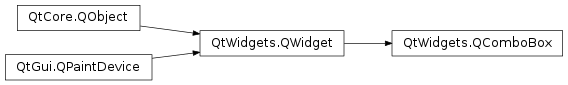

QComboBox¶
Inherited by: QFontComboBox
Synopsis¶
Functions¶
- def
addItem(icon, text[, userData=None]) - def
addItem(text[, userData=None]) - def
addItems(texts) - def
autoCompletion() - def
autoCompletionCaseSensitivity() - def
completer() - def
count() - def
currentData([role=Qt.UserRole]) - def
currentIndex() - def
currentText() - def
duplicatesEnabled() - def
findData(data[, role=Qt.UserRole[, flags=static_cast<Qt.MatchFlags>(Qt.MatchExactly|Qt.MatchCaseSensitive)]]) - def
findText(text[, flags=static_cast<Qt.MatchFlags>(Qt.MatchExactly|Qt.MatchCaseSensitive)]) - def
hasFrame() - def
iconSize() - def
initStyleOption(option) - def
inputMethodQuery(query, argument) - def
insertItem(index, icon, text[, userData=None]) - def
insertItem(index, text[, userData=None]) - def
insertItems(index, texts) - def
insertPolicy() - def
insertSeparator(index) - def
isEditable() - def
itemData(index[, role=Qt.UserRole]) - def
itemDelegate() - def
itemIcon(index) - def
itemText(index) - def
lineEdit() - def
maxCount() - def
maxVisibleItems() - def
minimumContentsLength() - def
model() - def
modelColumn() - def
removeItem(index) - def
rootModelIndex() - def
setAutoCompletion(enable) - def
setAutoCompletionCaseSensitivity(sensitivity) - def
setCompleter(c) - def
setDuplicatesEnabled(enable) - def
setEditable(editable) - def
setFrame(arg__1) - def
setIconSize(size) - def
setInsertPolicy(policy) - def
setItemData(index, value[, role=Qt.UserRole]) - def
setItemDelegate(delegate) - def
setItemIcon(index, icon) - def
setItemText(index, text) - def
setLineEdit(edit) - def
setMaxCount(max) - def
setMaxVisibleItems(maxItems) - def
setMinimumContentsLength(characters) - def
setModel(model) - def
setModelColumn(visibleColumn) - def
setRootModelIndex(index) - def
setSizeAdjustPolicy(policy) - def
setValidator(v) - def
setView(itemView) - def
sizeAdjustPolicy() - def
validator() - def
view()
Slots¶
- def
clear() - def
clearEditText() - def
setCurrentIndex(index) - def
setCurrentText(text) - def
setEditText(text)
Signals¶
- def
activated(arg__1) - def
activated(index) - def
currentIndexChanged(arg__1) - def
currentIndexChanged(index) - def
currentTextChanged(arg__1) - def
editTextChanged(arg__1) - def
highlighted(arg__1) - def
highlighted(index)
Detailed Description¶
The
PySide2.QtWidgets.QComboBoxwidget is a combined button and popup list.
A
PySide2.QtWidgets.QComboBoxprovides a means of presenting a list of options to the user in a way that takes up the minimum amount of screen space.A combobox is a selection widget that displays the current item, and can pop up a list of selectable items. A combobox may be editable, allowing the user to modify each item in the list.
Comboboxes can contain pixmaps as well as strings; the
PySide2.QtWidgets.QComboBox.insertItem()andPySide2.QtWidgets.QComboBox.setItemText()functions are suitably overloaded. For editable comboboxes, the functionPySide2.QtWidgets.QComboBox.clearEditText()is provided, to clear the displayed string without changing the combobox’s contents.There are two signals emitted if the current item of a combobox changes,
PySide2.QtWidgets.QComboBox.currentIndexChanged()andPySide2.QtWidgets.QComboBox.activated().PySide2.QtWidgets.QComboBox.currentIndexChanged()is always emitted regardless if the change was done programmatically or by user interaction, whilePySide2.QtWidgets.QComboBox.activated()is only emitted when the change is caused by user interaction. ThePySide2.QtWidgets.QComboBox.highlighted()signal is emitted when the user highlights an item in the combobox popup list. All three signals exist in two versions, one with aPySide2.QtCore.QStringargument and one with anintargument. If the user selects or highlights a pixmap, only theintsignals are emitted. Whenever the text of an editable combobox is changed thePySide2.QtWidgets.QComboBox.editTextChanged()signal is emitted.When the user enters a new string in an editable combobox, the widget may or may not insert it, and it can insert it in several locations. The default policy is
InsertAtBottombut you can change this usingPySide2.QtWidgets.QComboBox.setInsertPolicy().It is possible to constrain the input to an editable combobox using
PySide2.QtGui.QValidator; seePySide2.QtWidgets.QComboBox.setValidator(). By default, any input is accepted.A combobox can be populated using the insert functions,
PySide2.QtWidgets.QComboBox.insertItem()andPySide2.QtWidgets.QComboBox.insertItems()for example. Items can be changed withPySide2.QtWidgets.QComboBox.setItemText(). An item can be removed withPySide2.QtWidgets.QComboBox.removeItem()and all items can be removed withPySide2.QtWidgets.QComboBox.clear(). The text of the current item is returned byPySide2.QtWidgets.QComboBox.currentText(), and the text of a numbered item is returned with text(). The current item can be set withPySide2.QtWidgets.QComboBox.setCurrentIndex(). The number of items in the combobox is returned byPySide2.QtWidgets.QComboBox.count(); the maximum number of items can be set withPySide2.QtWidgets.QComboBox.setMaxCount(). You can allow editing usingPySide2.QtWidgets.QComboBox.setEditable(). For editable comboboxes you can set auto-completion usingPySide2.QtWidgets.QComboBox.setCompleter()and whether or not the user can add duplicates is set withPySide2.QtWidgets.QComboBox.setDuplicatesEnabled().
PySide2.QtWidgets.QComboBoxuses the model/view framework for its popup list and to store its items. By default aPySide2.QtGui.QStandardItemModelstores the items and aPySide2.QtWidgets.QListViewsubclass displays the popuplist. You can access the model and view directly (withPySide2.QtWidgets.QComboBox.model()andPySide2.QtWidgets.QComboBox.view()), butPySide2.QtWidgets.QComboBoxalso provides functions to set and get item data (e.g.,PySide2.QtWidgets.QComboBox.setItemData()andPySide2.QtWidgets.QComboBox.itemText()). You can also set a new model and view (withPySide2.QtWidgets.QComboBox.setModel()andPySide2.QtWidgets.QComboBox.setView()). For the text and icon in the combobox label, the data in the model that has theQt.DisplayRoleandQt.DecorationRoleis used. Note that you cannot alter theQAbstractItemView.SelectionModeof thePySide2.QtWidgets.QComboBox.view(), e.g., by usingPySide2.QtWidgets.QAbstractItemView.setSelectionMode().
-
class
PySide2.QtWidgets.QComboBox([parent=nullptr])¶ Parameters: parent – PySide2.QtWidgets.QWidgetConstructs a combobox with the given
parent, using the default modelPySide2.QtGui.QStandardItemModel.
-
PySide2.QtWidgets.QComboBox.InsertPolicy¶ This enum specifies what the
PySide2.QtWidgets.QComboBoxshould do when a new string is entered by the user.Constant Description QComboBox.NoInsert The string will not be inserted into the combobox. QComboBox.InsertAtTop The string will be inserted as the first item in the combobox. QComboBox.InsertAtCurrent The current item will be replaced by the string. QComboBox.InsertAtBottom The string will be inserted after the last item in the combobox. QComboBox.InsertAfterCurrent The string is inserted after the current item in the combobox. QComboBox.InsertBeforeCurrent The string is inserted before the current item in the combobox. QComboBox.InsertAlphabetically The string is inserted in the alphabetic order in the combobox.
-
PySide2.QtWidgets.QComboBox.SizeAdjustPolicy¶ This enum specifies how the size hint of the
PySide2.QtWidgets.QComboBoxshould adjust when new content is added or content changes.Constant Description QComboBox.AdjustToContents The combobox will always adjust to the contents QComboBox.AdjustToContentsOnFirstShow The combobox will adjust to its contents the first time it is shown. QComboBox.AdjustToMinimumContentsLength Use or instead. QComboBox.AdjustToMinimumContentsLengthWithIcon The combobox will adjust to PySide2.QtWidgets.QComboBox.minimumContentsLength()plus space for an icon. For performance reasons use this policy on large models.
-
PySide2.QtWidgets.QComboBox.activated(arg__1)¶ Parameters: arg__1 – unicode
-
PySide2.QtWidgets.QComboBox.activated(index) Parameters: index – PySide2.QtCore.int
-
PySide2.QtWidgets.QComboBox.addItem(text[, userData=None])¶ Parameters: - text – unicode
- userData – object
Adds an item to the combobox with the given
text, and containing the specifieduserData(stored in theQt.UserRole). The item is appended to the list of existing items.
-
PySide2.QtWidgets.QComboBox.addItem(icon, text[, userData=None]) Parameters: - icon –
PySide2.QtGui.QIcon - text – unicode
- userData – object
Adds an item to the combobox with the given
iconandtext, and containing the specifieduserData(stored in theQt.UserRole). The item is appended to the list of existing items.- icon –
-
PySide2.QtWidgets.QComboBox.addItems(texts)¶ Parameters: texts – list of strings Adds each of the strings in the given
textsto the combobox. Each item is appended to the list of existing items in turn.
-
PySide2.QtWidgets.QComboBox.autoCompletion()¶ Return type: PySide2.QtCore.boolUse
PySide2.QtWidgets.QComboBox.setCompleter()instead.
-
PySide2.QtWidgets.QComboBox.autoCompletionCaseSensitivity()¶ Return type: PySide2.QtCore.Qt.CaseSensitivityUse
PySide2.QtWidgets.QComboBox.setCompleter()andQCompleter.setCaseSensitivity()instead.
-
PySide2.QtWidgets.QComboBox.clear()¶ Clears the combobox, removing all items.
Note: If you have set an external model on the combobox this model will still be cleared when calling this function.
-
PySide2.QtWidgets.QComboBox.clearEditText()¶ Clears the contents of the line edit used for editing in the combobox.
-
PySide2.QtWidgets.QComboBox.completer()¶ Return type: PySide2.QtWidgets.QCompleterReturns the completer that is used to auto complete text input for the combobox.
See also
PySide2.QtWidgets.QComboBox.setCompleter()editable()
-
PySide2.QtWidgets.QComboBox.count()¶ Return type: PySide2.QtCore.int
-
PySide2.QtWidgets.QComboBox.currentData([role=Qt.UserRole])¶ Parameters: role – PySide2.QtCore.intReturn type: object
-
PySide2.QtWidgets.QComboBox.currentIndex()¶ Return type: PySide2.QtCore.int
-
PySide2.QtWidgets.QComboBox.currentIndexChanged(index)¶ Parameters: index – PySide2.QtCore.int
-
PySide2.QtWidgets.QComboBox.currentIndexChanged(arg__1) Parameters: arg__1 – unicode
-
PySide2.QtWidgets.QComboBox.currentText()¶ Return type: unicode
-
PySide2.QtWidgets.QComboBox.currentTextChanged(arg__1)¶ Parameters: arg__1 – unicode
-
PySide2.QtWidgets.QComboBox.duplicatesEnabled()¶ Return type: PySide2.QtCore.bool
-
PySide2.QtWidgets.QComboBox.editTextChanged(arg__1)¶ Parameters: arg__1 – unicode
-
PySide2.QtWidgets.QComboBox.findData(data[, role=Qt.UserRole[, flags=static_cast<Qt.MatchFlags>(Qt.MatchExactly|Qt.MatchCaseSensitive)]])¶ Parameters: - data – object
- role –
PySide2.QtCore.int - flags –
PySide2.QtCore.Qt.MatchFlags
Return type: PySide2.QtCore.intReturns the index of the item containing the given
datafor the givenrole; otherwise returns -1.The
flagsspecify how the items in the combobox are searched.
-
PySide2.QtWidgets.QComboBox.findText(text[, flags=static_cast<Qt.MatchFlags>(Qt.MatchExactly|Qt.MatchCaseSensitive)])¶ Parameters: - text – unicode
- flags –
PySide2.QtCore.Qt.MatchFlags
Return type: PySide2.QtCore.intReturns the index of the item containing the given
text; otherwise returns -1.The
flagsspecify how the items in the combobox are searched.
-
PySide2.QtWidgets.QComboBox.hasFrame()¶ Return type: PySide2.QtCore.bool
-
PySide2.QtWidgets.QComboBox.hidePopup()¶ Hides the list of items in the combobox if it is currently visible and resets the internal state, so that if the custom pop-up was shown inside the reimplemented
PySide2.QtWidgets.QComboBox.showPopup(), then you also need to reimplement the function to hide your custom pop-up and call the base class implementation to reset the internal state whenever your custom pop-up widget is hidden.
-
PySide2.QtWidgets.QComboBox.highlighted(arg__1)¶ Parameters: arg__1 – unicode
-
PySide2.QtWidgets.QComboBox.highlighted(index) Parameters: index – PySide2.QtCore.int
-
PySide2.QtWidgets.QComboBox.iconSize()¶ Return type: PySide2.QtCore.QSize
-
PySide2.QtWidgets.QComboBox.initStyleOption(option)¶ Parameters: option – PySide2.QtWidgets.QStyleOptionComboBoxInitialize
optionwith the values from thisPySide2.QtWidgets.QComboBox. This method is useful for subclasses when they need aPySide2.QtWidgets.QStyleOptionComboBox, but don’t want to fill in all the information themselves.See also
-
PySide2.QtWidgets.QComboBox.inputMethodQuery(query, argument)¶ Parameters: - query –
PySide2.QtCore.Qt.InputMethodQuery - argument – object
Return type: - query –
-
PySide2.QtWidgets.QComboBox.insertItem(index, text[, userData=None])¶ Parameters: - index –
PySide2.QtCore.int - text – unicode
- userData – object
Inserts the
textanduserData(stored in theQt.UserRole) into the combobox at the givenindex.If the index is equal to or higher than the total number of items, the new item is appended to the list of existing items. If the index is zero or negative, the new item is prepended to the list of existing items.
- index –
-
PySide2.QtWidgets.QComboBox.insertItem(index, icon, text[, userData=None]) Parameters: - index –
PySide2.QtCore.int - icon –
PySide2.QtGui.QIcon - text – unicode
- userData – object
Inserts the
icon,textanduserData(stored in theQt.UserRole) into the combobox at the givenindex.If the index is equal to or higher than the total number of items, the new item is appended to the list of existing items. If the index is zero or negative, the new item is prepended to the list of existing items.
- index –
-
PySide2.QtWidgets.QComboBox.insertItems(index, texts)¶ Parameters: - index –
PySide2.QtCore.int - texts – list of strings
Inserts the strings from the
listinto the combobox as separate items, starting at theindexspecified.If the index is equal to or higher than the total number of items, the new items are appended to the list of existing items. If the index is zero or negative, the new items are prepended to the list of existing items.
- index –
-
PySide2.QtWidgets.QComboBox.insertPolicy()¶ Return type: PySide2.QtWidgets.QComboBox.InsertPolicy
-
PySide2.QtWidgets.QComboBox.insertSeparator(index)¶ Parameters: index – PySide2.QtCore.intInserts a separator item into the combobox at the given
index.If the index is equal to or higher than the total number of items, the new item is appended to the list of existing items. If the index is zero or negative, the new item is prepended to the list of existing items.
-
PySide2.QtWidgets.QComboBox.isEditable()¶ Return type: PySide2.QtCore.bool
-
PySide2.QtWidgets.QComboBox.itemData(index[, role=Qt.UserRole])¶ Parameters: - index –
PySide2.QtCore.int - role –
PySide2.QtCore.int
Return type: Returns the data for the given
rolein the givenindexin the combobox, orQVariant.Invalidif there is no data for this role.- index –
-
PySide2.QtWidgets.QComboBox.itemDelegate()¶ Return type: PySide2.QtWidgets.QAbstractItemDelegateReturns the item delegate used by the popup list view.
-
PySide2.QtWidgets.QComboBox.itemIcon(index)¶ Parameters: index – PySide2.QtCore.intReturn type: PySide2.QtGui.QIconReturns the icon for the given
indexin the combobox.
-
PySide2.QtWidgets.QComboBox.itemText(index)¶ Parameters: index – PySide2.QtCore.intReturn type: unicode Returns the text for the given
indexin the combobox.
-
PySide2.QtWidgets.QComboBox.lineEdit()¶ Return type: PySide2.QtWidgets.QLineEditReturns the line edit used to edit items in the combobox, or 0 if there is no line edit.
Only editable combo boxes have a line edit.
-
PySide2.QtWidgets.QComboBox.maxCount()¶ Return type: PySide2.QtCore.int
-
PySide2.QtWidgets.QComboBox.maxVisibleItems()¶ Return type: PySide2.QtCore.int
-
PySide2.QtWidgets.QComboBox.minimumContentsLength()¶ Return type: PySide2.QtCore.int
-
PySide2.QtWidgets.QComboBox.model()¶ Return type: PySide2.QtCore.QAbstractItemModelReturns the model used by the combobox.
-
PySide2.QtWidgets.QComboBox.modelColumn()¶ Return type: PySide2.QtCore.int
-
PySide2.QtWidgets.QComboBox.removeItem(index)¶ Parameters: index – PySide2.QtCore.intRemoves the item at the given
indexfrom the combobox. This will update the current index if the index is removed.This function does nothing if
indexis out of range.
-
PySide2.QtWidgets.QComboBox.rootModelIndex()¶ Return type: PySide2.QtCore.QModelIndexReturns the root model item index for the items in the combobox.
-
PySide2.QtWidgets.QComboBox.setAutoCompletion(enable)¶ Parameters: enable – PySide2.QtCore.boolUse
PySide2.QtWidgets.QComboBox.setCompleter()instead.
-
PySide2.QtWidgets.QComboBox.setAutoCompletionCaseSensitivity(sensitivity)¶ Parameters: sensitivity – PySide2.QtCore.Qt.CaseSensitivityUse
PySide2.QtWidgets.QComboBox.setCompleter()andQCompleter.setCaseSensitivity()instead.
-
PySide2.QtWidgets.QComboBox.setCompleter(c)¶ Parameters: c – PySide2.QtWidgets.QCompleterSets the
completerto use instead of the current completer. Ifcompleteris 0, auto completion is disabled.By default, for an editable combo box, a
PySide2.QtWidgets.QCompleterthat performs case insensitive inline completion is automatically created.Note
The completer is removed when the
editable()property becomesfalse.
-
PySide2.QtWidgets.QComboBox.setCurrentIndex(index)¶ Parameters: index – PySide2.QtCore.int
-
PySide2.QtWidgets.QComboBox.setCurrentText(text)¶ Parameters: text – unicode
-
PySide2.QtWidgets.QComboBox.setDuplicatesEnabled(enable)¶ Parameters: enable – PySide2.QtCore.bool
-
PySide2.QtWidgets.QComboBox.setEditText(text)¶ Parameters: text – unicode Sets the
textin the combobox’s text edit.
-
PySide2.QtWidgets.QComboBox.setEditable(editable)¶ Parameters: editable – PySide2.QtCore.bool
-
PySide2.QtWidgets.QComboBox.setFrame(arg__1)¶ Parameters: arg__1 – PySide2.QtCore.bool
-
PySide2.QtWidgets.QComboBox.setIconSize(size)¶ Parameters: size – PySide2.QtCore.QSize
-
PySide2.QtWidgets.QComboBox.setInsertPolicy(policy)¶ Parameters: policy – PySide2.QtWidgets.QComboBox.InsertPolicy
-
PySide2.QtWidgets.QComboBox.setItemData(index, value[, role=Qt.UserRole])¶ Parameters: - index –
PySide2.QtCore.int - value – object
- role –
PySide2.QtCore.int
Sets the data
rolefor the item on the givenindexin the combobox to the specifiedvalue.- index –
-
PySide2.QtWidgets.QComboBox.setItemDelegate(delegate)¶ Parameters: delegate – PySide2.QtWidgets.QAbstractItemDelegateSets the item
delegatefor the popup list view. The combobox takes ownership of the delegate.Warning
You should not share the same instance of a delegate between comboboxes, widget mappers or views. Doing so can cause incorrect or unintuitive editing behavior since each view connected to a given delegate may receive the
PySide2.QtWidgets.QAbstractItemDelegate.closeEditor()signal, and attempt to access, modify or close an editor that has already been closed.
-
PySide2.QtWidgets.QComboBox.setItemIcon(index, icon)¶ Parameters: - index –
PySide2.QtCore.int - icon –
PySide2.QtGui.QIcon
Sets the
iconfor the item on the givenindexin the combobox.- index –
-
PySide2.QtWidgets.QComboBox.setItemText(index, text)¶ Parameters: - index –
PySide2.QtCore.int - text – unicode
Sets the
textfor the item on the givenindexin the combobox.- index –
-
PySide2.QtWidgets.QComboBox.setLineEdit(edit)¶ Parameters: edit – PySide2.QtWidgets.QLineEditSets the line
editto use instead of the current line edit widget.The combo box takes ownership of the line edit.
-
PySide2.QtWidgets.QComboBox.setMaxCount(max)¶ Parameters: max – PySide2.QtCore.int
-
PySide2.QtWidgets.QComboBox.setMaxVisibleItems(maxItems)¶ Parameters: maxItems – PySide2.QtCore.int
-
PySide2.QtWidgets.QComboBox.setMinimumContentsLength(characters)¶ Parameters: characters – PySide2.QtCore.int
-
PySide2.QtWidgets.QComboBox.setModel(model)¶ Parameters: model – PySide2.QtCore.QAbstractItemModelSets the model to be
model.modelmust not be 0. If you want to clear the contents of a model, callPySide2.QtWidgets.QComboBox.clear().
-
PySide2.QtWidgets.QComboBox.setModelColumn(visibleColumn)¶ Parameters: visibleColumn – PySide2.QtCore.int
-
PySide2.QtWidgets.QComboBox.setRootModelIndex(index)¶ Parameters: index – PySide2.QtCore.QModelIndexSets the root model item
indexfor the items in the combobox.
-
PySide2.QtWidgets.QComboBox.setSizeAdjustPolicy(policy)¶ Parameters: policy – PySide2.QtWidgets.QComboBox.SizeAdjustPolicy
-
PySide2.QtWidgets.QComboBox.setValidator(v)¶ Parameters: v – PySide2.QtGui.QValidatorSets the
validatorto use instead of the current validator.Note
The validator is removed when the
editable()property becomesfalse.
-
PySide2.QtWidgets.QComboBox.setView(itemView)¶ Parameters: itemView – PySide2.QtWidgets.QAbstractItemViewSets the view to be used in the combobox popup to the given
itemView. The combobox takes ownership of the view.Note: If you want to use the convenience views (like
PySide2.QtWidgets.QListWidget,PySide2.QtWidgets.QTableWidgetorPySide2.QtWidgets.QTreeWidget), make sure to callPySide2.QtWidgets.QComboBox.setModel()on the combobox with the convenience widgets model before calling this function.See also
-
PySide2.QtWidgets.QComboBox.showPopup()¶ Displays the list of items in the combobox. If the list is empty then the no items will be shown.
If you reimplement this function to show a custom pop-up, make sure you call
PySide2.QtWidgets.QComboBox.hidePopup()to reset the internal state.
-
PySide2.QtWidgets.QComboBox.sizeAdjustPolicy()¶ Return type: PySide2.QtWidgets.QComboBox.SizeAdjustPolicy
-
PySide2.QtWidgets.QComboBox.validator()¶ Return type: PySide2.QtGui.QValidatorReturns the validator that is used to constrain text input for the combobox.
See also
PySide2.QtWidgets.QComboBox.setValidator()editable()
-
PySide2.QtWidgets.QComboBox.view()¶ Return type: PySide2.QtWidgets.QAbstractItemViewReturns the list view used for the combobox popup.
© 2018 The Qt Company Ltd. Documentation contributions included herein are the copyrights of their respective owners. The documentation provided herein is licensed under the terms of the GNU Free Documentation License version 1.3 as published by the Free Software Foundation. Qt and respective logos are trademarks of The Qt Company Ltd. in Finland and/or other countries worldwide. All other trademarks are property of their respective owners.